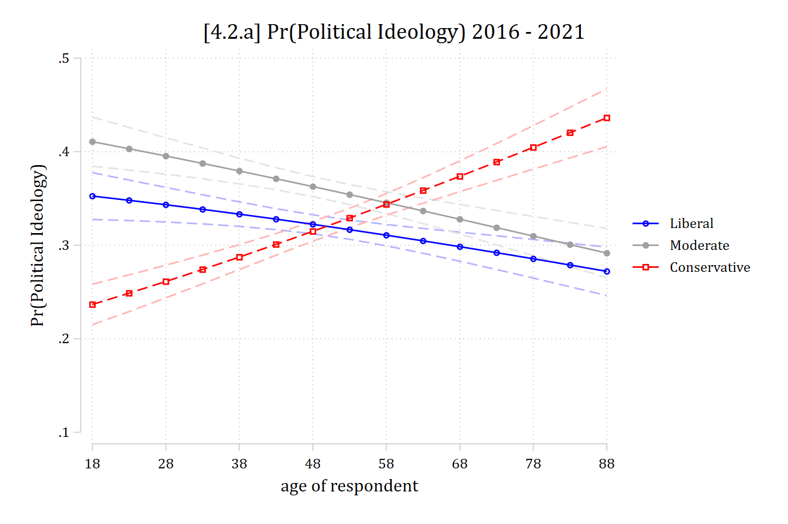
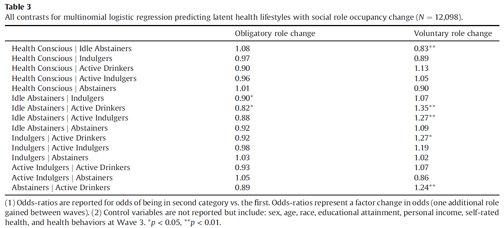

Similar to binary logit, multinomial logit can also be interpreted by exponentiating the regression coefficients
The coefficients represent the dynamics among the outcome categories
These are in terms of a specific outcome category compared to a specific other outcome category
E.g., The odds of being in category 1 compared to the odds of being in category 3
Note this is different than what the MEs summarize (probability of a specific outcome category out of all possible outcome categories)
E.g., The probability of being in category 1 out of the probability of being in any of categories 1, 2, 3, 4, … J
Because of this discrepancy in what the coefficients and the MEs summarize, the coefficients can have confusing and non-intuitive relationships to the MEs
mlogit (N=5000): Factor change in the odds of y
Variable: x2 (sd=0.999)
------------------------------------------------------------------------------
| b z P>|z| e^b e^bStdX
-----------------------------+------------------------------------------------
1 vs 2 | 0.1858 3.776 0.000 1.204 1.204
1 vs 3 | -1.2784 -25.272 0.000 0.278 0.279
2 vs 1 | -0.1858 -3.776 0.000 0.830 0.831
2 vs 3 | -1.4642 -24.046 0.000 0.231 0.232
3 vs 1 | 1.2784 25.272 0.000 3.591 3.584
3 vs 2 | 1.4642 24.046 0.000 4.324 4.315
------------------------------------------------------------------------------
# All contrasts among the outcomes: refit the model with each outcome# category as the base/reference categoryall_contrasts <-function(model, term) { data <-eval(model$call$data) y <-all.vars(formula(model))[1] out <-lapply(model$lev, function(ref) { data[[y]] <-relevel(data[[y]], ref = ref) s <-summary(update(model, data = data)) b <- s$coefficients[, term] z <- b / s$standard.errors[, term]data.frame(contrast =paste(rownames(s$coefficients), "vs", ref),b =round(b, 4), z =round(z, 3), p =round(2*pnorm(-abs(z)), 3),exp_b =round(exp(b), 3), row.names =NULL) })do.call(rbind, out)}# All ORs for x2all_contrasts(simmod, "x2")
contrast b z p exp_b
1 2 vs 1 -0.1594 -3.203 0.001 0.853
2 3 vs 1 1.3261 26.197 0.000 3.767
3 1 vs 2 0.1594 3.202 0.001 1.173
4 3 vs 2 1.4856 24.529 0.000 4.418
5 1 vs 3 -1.3262 -26.197 0.000 0.265
6 2 vs 3 -1.4856 -24.530 0.000 0.226
Note, column “b” is the log-odds; column “e^b” is exp(b) which are the conditional odds ratios
To start, let’s examine the effects for category 3 (odds of category 3 compared to odds of category 2 and category 1)
Do these match your general impressions of the effects of x2?
What about the effect of category 1 vs 2—the odds of category 1 compared to category 2?
Do these match your general impressions of the effects of x2?
Multinomial logit is a set of binary logits that are simultaneously estimated
Recall back to our example of political views (Conservative, Moderate, Liberal):
Interpretation: For a unit increase in xk the odds of category L versus category M change by a factor of exp(βk, L|M), conditional on not being in any other categories
The “conditional on not being in any other categories” part is important and what distinguishes an exponentiated coefficient in multinomial logit from a true odds ratio from binary logit
In the example above only the observations in categories L or M are being compared
Observations in category C are not used—the odds ratio for L vs M is conditional on the observation not being in category C
Odds ratios (ORs) vs conditional ORs
Consider a binary outcome conservative/not and gender (woman=1) as an IV
The conditional OR for women is 0.7810 in the conservative panel—which does not match the OR of 0.750 we calculated above. Why do you think this is?
* Quick terminology note: Stata uses the term “relative risk ratio” (rationale for term here) which is a synonym for conditional odds ratio; this is the exponentiated regression coefficient
di"Women: pr(conserv) conditional on not being moderate = " .2962 / (.2962 + .3262)
Women: pr(conserv) conditional on not being moderate = .47589974
di"Men: pr(conserv) conditional on not being moderate = " .3594 / (.3594 + .3091)
Men: pr(conserv) conditional on not being moderate = .53762154
di"Women: Odds(conserv) conditional on not being moderate = " .47589974 / (1 - .47589974)
Women: Odds(conserv) conditional on not being moderate = .90803187
di"Men: Odds(conserv) conditional on not being moderate = " .53762154 / (1 - .53762154)
Men: Odds(conserv) conditional on not being moderate = 1.1627305
di"Odds ratio of women / men conditional on not being moderate = " .90803187 / 1.1627305
Odds ratio of women / men conditional on not being moderate = .78094784
# Women: pr(conserv) conditional on not being moderate.2962/ (.2962+ .3262)
[1] 0.4758997
# Men: pr(conserv) conditional on not being moderate.3594/ (.3594+ .3091)
[1] 0.5376215
# Women: Odds(conserv) conditional on not being moderate.47589974/ (1- .47589974)
[1] 0.9080319
# Men: Odds(conserv) conditional on not being moderate.53762154/ (1- .53762154)
[1] 1.162731
# Odds ratio of women / men conditional on not being moderate.90803187/1.1627305
[1] 0.7809478
Remember that the coefficients mlogit reports are conditional on not being in other categories—here, the coefficient in conservative panel is for Conservative vs Liberal (the base/reference category), conditional on not being moderate
Interpreting conditional ORs / RRRs
Because of this “conditional” nature of the coefficients in multinomial logit, it is not strictly appropriate to refer to them as odds ratios
Others conceptualize them as “relative risk ratios” (Stata’s term, explained here)—TLDR: mathematically a ratio of two risk ratios (conditional on not being in other categories) is equivalent to a conditional odds ratio
Within sociology, referring to them as “odds ratios” is not problematic and you generally will be understood
May not be the case in other fields
Within or outside of sociology, it cannot hurt to note your understanding of this distinction in your Analytic Strategy section of your paper. E.g., Feel free to copy this for your needs:
I report exponentiated coefficients from the multinomial logit models, which represent conditional odds ratios (AKA relative risk ratios)—referred to simply as “odds ratios” in what follows (see Long and Freese 2014).
mlogit (N=7823): Factor change in the odds of polviews3
Variable: age (sd=17.361)
------------------------------------------------------------------------------
| b z P>|z| e^b e^bStdX
-----------------------------+------------------------------------------------
Liberal vs Moderate | 0.0010 0.518 0.604 1.001 1.017
Liberal vs Conservative | -0.0130 -6.489 0.000 0.987 0.799
Moderate vs Liberal | -0.0010 -0.518 0.604 0.999 0.983
Moderate vs Conservative | -0.0139 -7.329 0.000 0.986 0.785
Conservative vs Liberal | 0.0130 6.489 0.000 1.013 1.252
Conservative vs Moderate | 0.0139 7.329 0.000 1.014 1.274
------------------------------------------------------------------------------
In R, would need to refit model changing the reference outcome category
pol3mod <-multinom(polviews3 ~ age + woman + race3 + college + married + parent + faminc + employed, data = gss, trace =FALSE)all_contrasts(pol3mod, "age")
contrast b z p exp_b
1 Moderate vs Liberal -0.0010 -0.518 0.604 0.999
2 Conservative vs Liberal 0.0130 6.489 0.000 1.013
3 Liberal vs Moderate 0.0010 0.518 0.604 1.001
4 Conservative vs Moderate 0.0139 7.329 0.000 1.014
5 Liberal vs Conservative -0.0130 -6.489 0.000 0.987
6 Moderate vs Conservative -0.0139 -7.329 0.000 0.986
Each contrast appears twice (e.g., Liberal vs Moderate and Moderate vs Liberal), so half of the coefficients and significance tests are redundant; there are only three unique ORs. Which direction of the contrast to interpret depends on your research question, but there is no reason to interpret both
Interpreting ORs in multinomial logit: continuous IV
For a one year increase in age, the odds of identifying as conservative compared to moderate increase by a factor of 1.014 (holding all else constant)
For a one-year increase in age, the odds of identifying as conservative instead of liberal increase by a factor of 1.013 (all else equal)
Age has no significant effect on the odds of identifying as liberal compared to moderate (p = ns)

Do the ORs interpreted above tell the whole story? Would you be able to ascertain that age has a negative effect on the probability of identifying as moderate? A positive effect on the probability of identifying as conservative? Etc.
mlogit (N=7823): Factor change in the odds of polviews3
Variable: 1.college (sd=0.485)
------------------------------------------------------------------------------
| b z P>|z| e^b e^bStdX
-----------------------------+------------------------------------------------
Liberal vs Moderate | 0.9020 14.071 0.000 2.465 1.549
Liberal vs Conservative | 0.7312 11.234 0.000 2.078 1.426
Moderate vs Liberal | -0.9020 -14.071 0.000 0.406 0.645
Moderate vs Conservative | -0.1708 -2.602 0.009 0.843 0.920
Conservative vs Liberal | -0.7312 -11.234 0.000 0.481 0.701
Conservative vs Moderate | 0.1708 2.602 0.009 1.186 1.086
------------------------------------------------------------------------------
all_contrasts(pol3mod, "collegeCollege Degree")
contrast b z p exp_b
1 Moderate vs Liberal -0.9020 -14.071 0.000 0.406
2 Conservative vs Liberal -0.7312 -11.234 0.000 0.481
3 Liberal vs Moderate 0.9020 14.071 0.000 2.465
4 Conservative vs Moderate 0.1708 2.602 0.009 1.186
5 Liberal vs Conservative 0.7312 11.234 0.000 2.078
6 Moderate vs Conservative -0.1708 -2.602 0.009 0.843
For those with college degrees, the odds of identifying as liberal are 2.465 times higher than the odds of identifying as moderate (compared to those without college degrees)
The odds of identifying as liberal over conservative increase by a factor of 2.078 for those with a college degree
The odds of identifying as conservative compared to moderate are 1.186 times higher for those with a college degree

“… the first row of the table indicates that obligatory role change does not distinguish between membership in the Idle Abstainer and Health Conscious lifestyle at Wave 4 (OR = 1.08, ns), but that gaining an additional voluntary role between waves is associated with lower odds of being in the Idle Abstainer lifestyle compared to being in the Health Conscious lifestyle (OR = 0.83, 95% CI [0.73, 0.93]).” (Mize 2017)